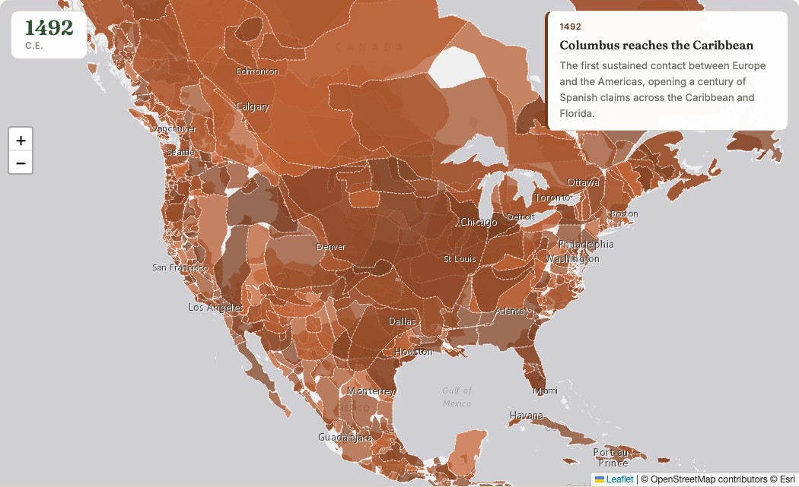

GIS that makes the overlooked undeniable.
Real maps, real data, real people who needed someone to notice. New ones posted here roughly every week.
How the United States Took Shape
A timelapse of who actually controlled North American territory, from first contact in 1492 to the fifty states of today.

I wanted a genuinely creative GIS project: a timelapse of how the United States actually took shape, not just the country's own borders but who controlled the land before, during, and after. Most maps like this either skip the colonial era entirely or treat everything before 1776 as blank space waiting to be claimed. I wanted to do better than that.
Real snapshots, not a fake smooth animation
The map jumps between 22 real years, 1492 through 2010 from a real open historical-boundaries dataset, plus a modern 2026 frame built from current Census state boundaries. A smoothly morphed animation between snapshots would look slicker, but it would also invent a precision that never existed. Borders didn't drift gradually, they changed through specific wars, treaties, and purchases, so the map jumps between real years and lets 25 curated historical events explain why.
Indigenous nations, the whole time
Every Indigenous nation on the map is its own individually named polygon with a dashed border, shown for the entire 500-plus years, not just before 1776. The land didn't stop being theirs when European powers or the United States drew lines on paper claiming otherwise, and the map doesn't pretend it did.
The underlying "who controls what" data is inherently contested. Colonial claims on paper often didn't match who actually controlled ground-level territory, and historical Indigenous nation boundaries are necessarily approximate. Treat this as a reasonable, real-sourced approximation built for a specific storytelling purpose, not a precise legal record.
Press play, drag the year slider, or click any territory for its name.
View the map (opens in a new tab) View the code (opens in a new tab)